Mind-A-Log: Assisting Troubled Youth with Anxiety and Depression
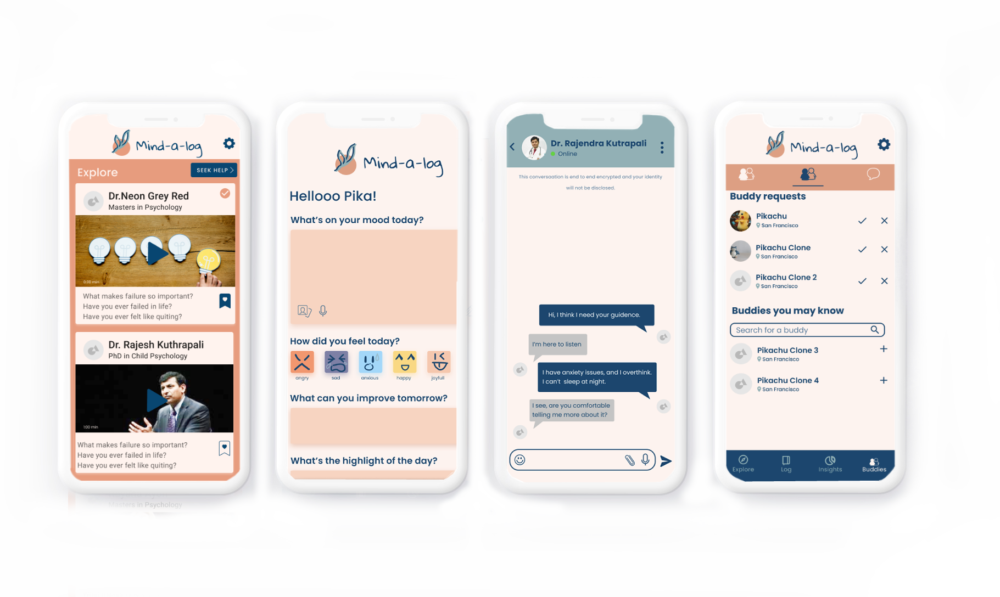
Process

Brainstorming & Competitive Analysis
Brainstorming potential ideas we were passionate about using brainwriting, and determining our unique selling point by researching competitors.
Customer Persona Crafting
Crafting out our persona and identifying Matthew's pain points and customer journey.

Prototype Creation
Used our brainstormed concepts and persona in order to define features and create the app.
Overview
Each year, youths from the ages of 18–24 are at most risk for anxiety and depression. 1-in-3 adolescents (31.9%) will meet criteria for an anxiety disorder by the age of 18.
Youths need a support system that will help guide them through their anxiety and depression. Mind-A-Log was designed to provide that support through mood tracking, accountability systems, and access to professional resources.
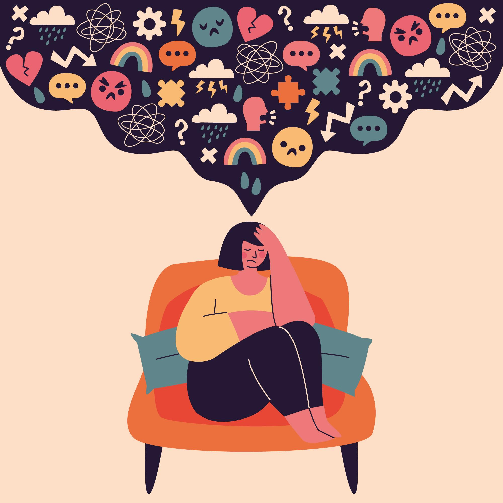
Problem Statement
How might we make it easier for youths to manage their anxiety and depression?
Meet Matthew
Matthew is a 20 year old college student who has to juggle school, an internship, and a part-time job. They are stressed and anxious and are looking for a solution to help better their life. One day, Matthew's counsellor introduces them to Mind-a-Log.
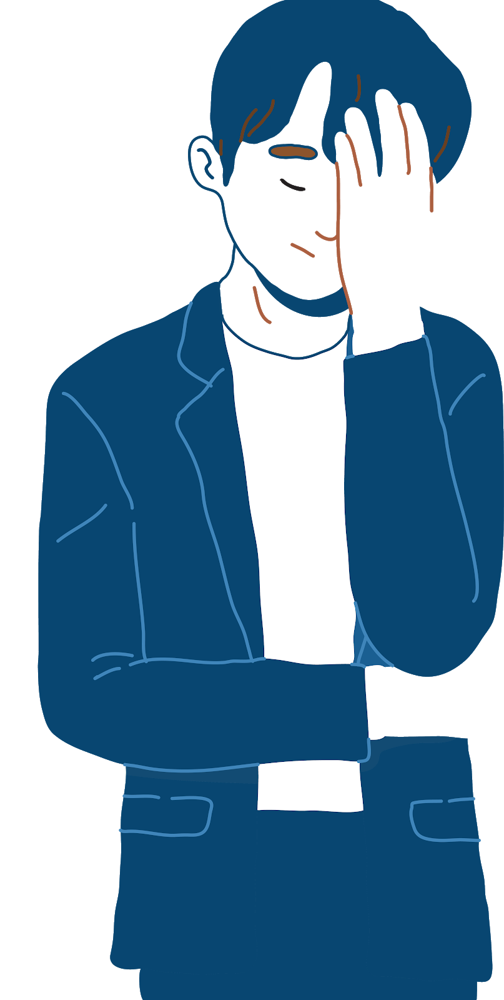
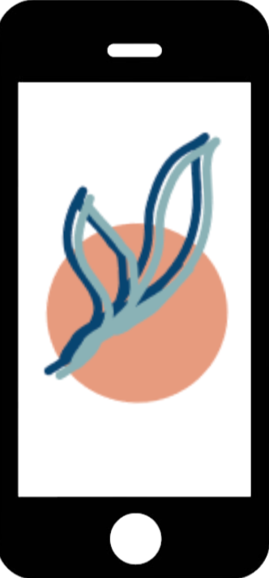
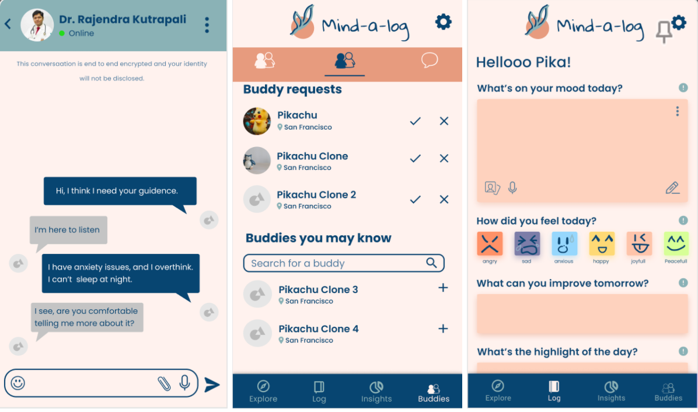
Prototype Features
Journaling & Mood Tracking
All 3 user interviewees said they struggled most with routine. Includes mood-tracking and various inputs that allow Matthew to recognize harmful thought patterns, establish order through journaling, see mood progress over time, and uplift his mood.

Accountability Buddies
All users interviewed during the pandemic mentioned that isolation made them feel more distracted and anxious. Having social support helped decrease anxiety. Features: SOS button, adding an accountability buddy, and chat features.
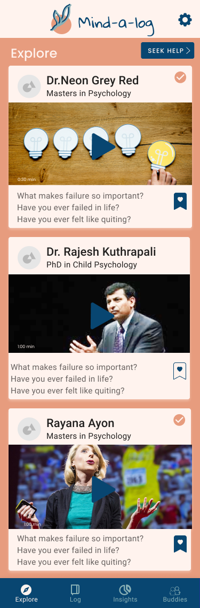
Consult a Psychologist
A counselor interviewed said that in cases of severe depression, psychological help is needed. All users didn't know what to do when they had anxiety or depression due to a lack of resources. Features include: viewing psychologists, booking appointments, and asking questions via chat.
Summary & Resolution of Pain Points
Mind-A-Log addresses Matthew's pain points by:
- Uplifting Matthew's mood by establishing routine through journaling & mood tracking
- Creating an accountability & support system so Matthew is not alone in his struggles
- Giving Matthew the appropriate resources when needed, via a psychologist directory and self-help articles
Step 1: Brainstorming & Competitive Analysis
To determine which topics our group was most passionate about, we used brainwriting — one person writes an idea, and another elaborates on it. This led us to the concept of mental health as our main topic.
We also researched competitors to determine what apps existed in the mental health space. Although there were many apps targeted towards teenagers and adults, there were barely any targeted specifically towards youth — so we steered the app in that direction.
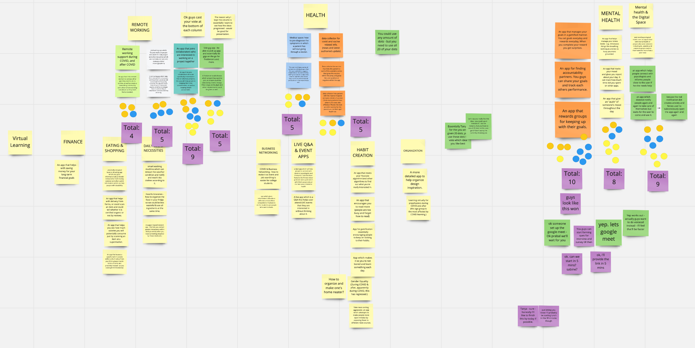
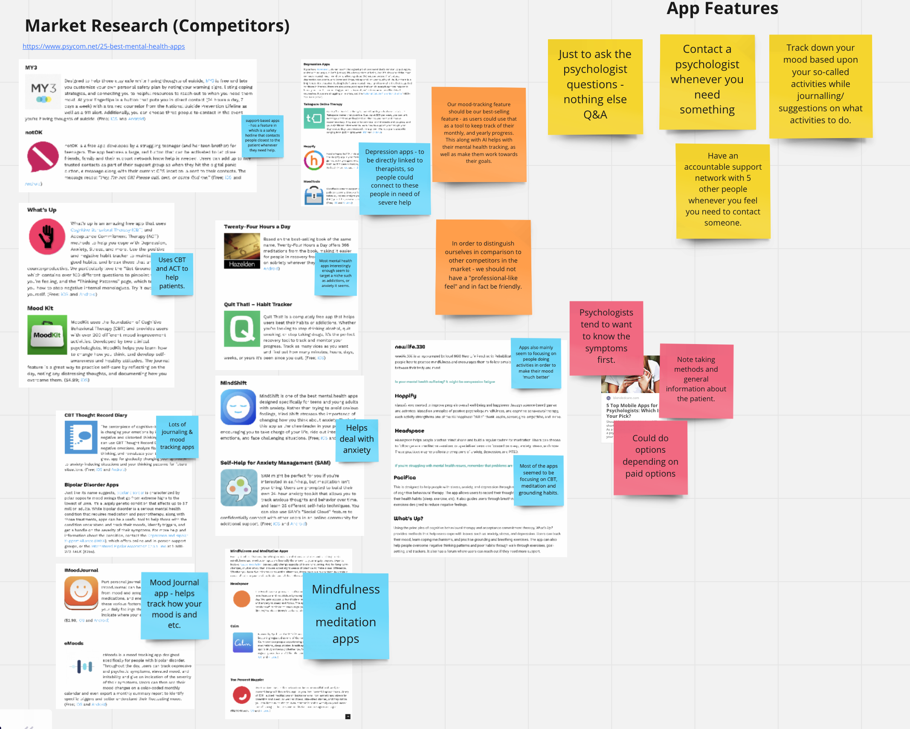
Step 2: Customer Persona Crafting
Once we decided upon our in-app features, we crafted our persona. At first we considered both a user and psychologist persona, but after deliberation decided to focus on the user persona first, as the psychologist would require a separate interface.
We also created a customer journey for Matthew, which helped identify a key insight: we should not target the app towards those with major anxiety/depression, as that would be beyond our scope. Instead, users are more likely to discover the app through a mental health professional who can assess whether the user's condition is mild or major. This shaped our feature decisions — the "consult a psychologist" option was added specifically because the app targets only mild cases.
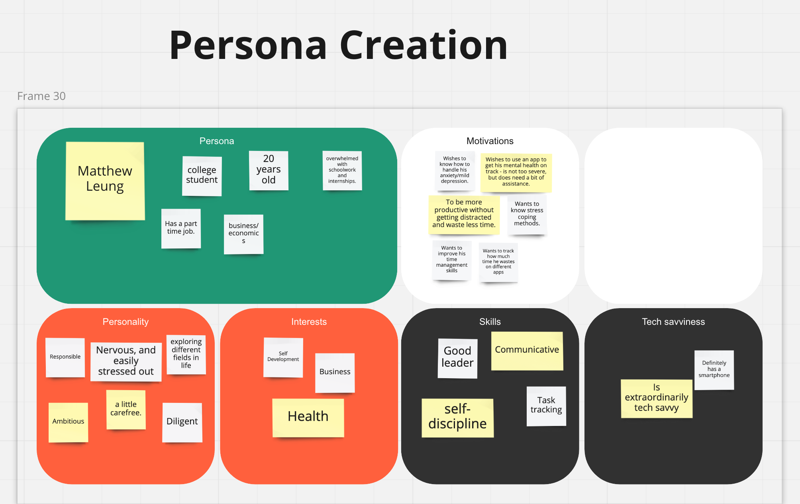
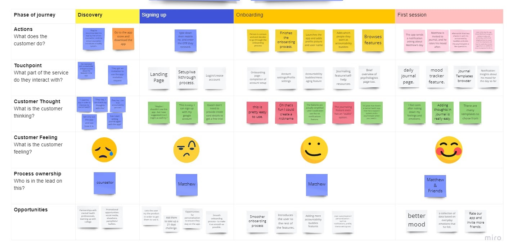
Step 3: Prototyping
After deciding upon our user persona, we created a user flow and task flow for our prototype, which led to the final creation of the app accordingly.
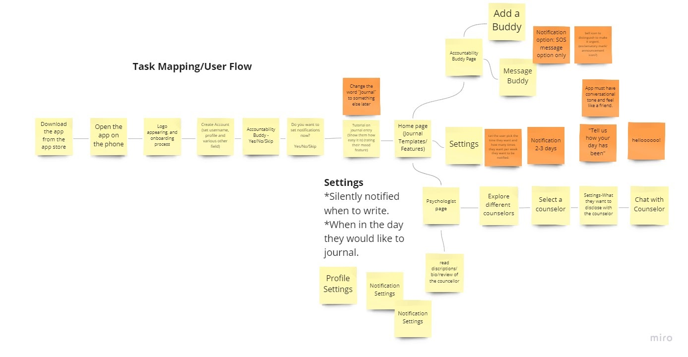
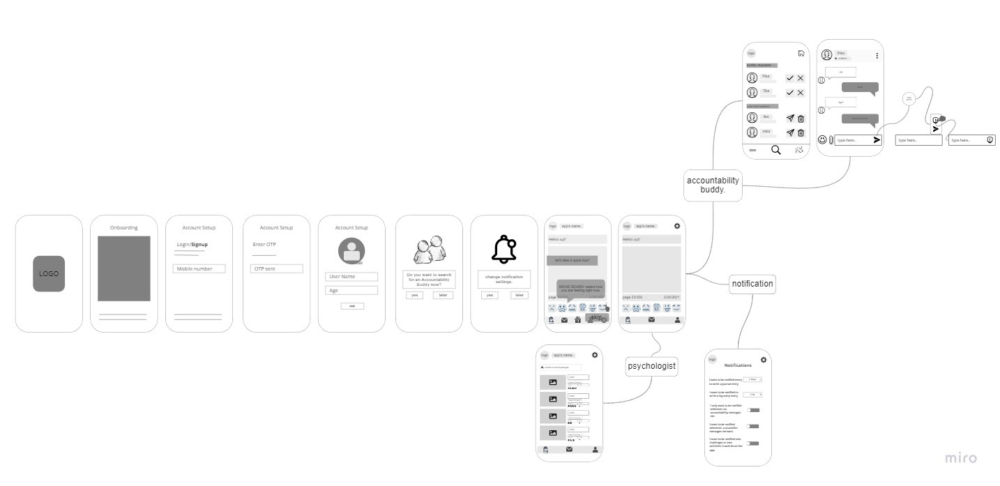
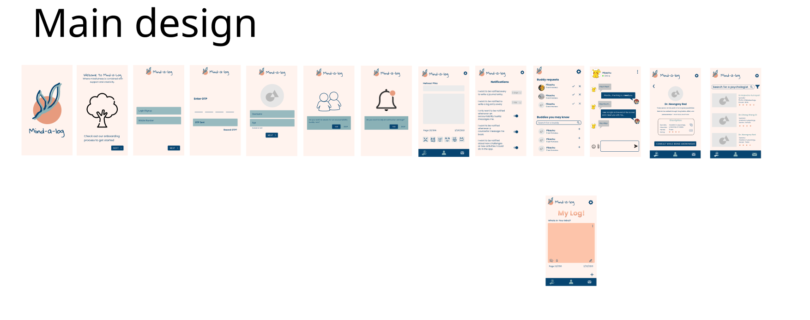
Outcomes & Results
Overall, we managed to complete the project on time. Presentation took longer than expected — this taught me not to underestimate documenting and organizing findings in advance.
The project made me determined to learn Figma more deeply. I was strong in the creative process and directing the team, but struggled with execution due to limited Figma experience at the time.
The Accountability Buddy feature generated the most team discussion — particularly around notifications. We decided users would only be notified when their accountability buddy sent them a message, with no other unsolicited notifications beyond self-prescribed journaling reminders.
Style tiles should have been elaborated on before starting the design process, to establish consistent branding before making changes became costly.